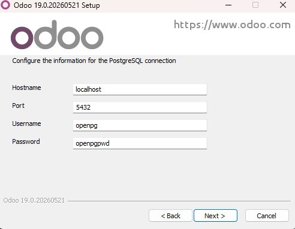
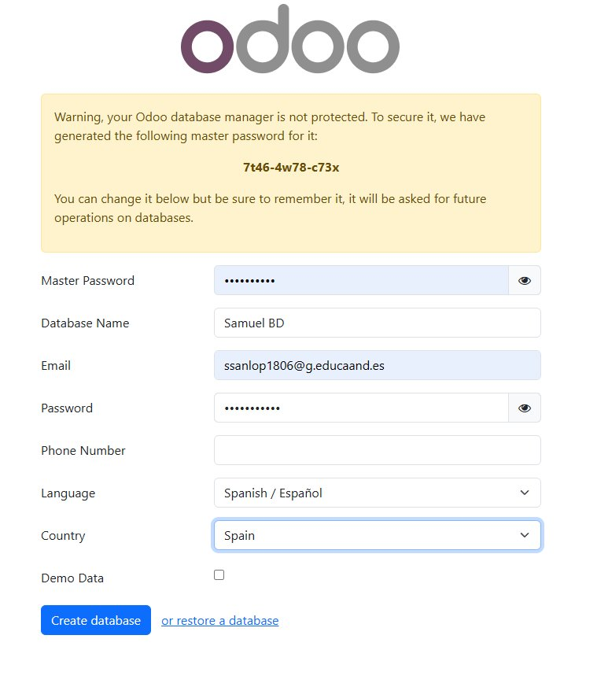

Instalación
Odoo Community se descarga desde su web oficial. El instalador para Windows ya incluye PostgreSQL, que es la base de datos que usa, así que no hay que instalarla aparte.
Pasos
- Descargar el instalador desde odoo.com/page/download.
- Ejecutarlo y seguir el asistente: elegir idioma, aceptar la licencia (LGPLv3) y dejar el tipo de instalación "All in One".
- Definir el usuario y contraseña de PostgreSQL. Por defecto crea el usuario
openpg. - Elegir la carpeta de instalación (por defecto
C:\Program Files\Odoo 17.0). - Esperar a que termine. Tarda varios minutos porque también instala PostgreSQL y todas las dependencias.
- Abrir el navegador y entrar en
http://localhost:8069para crear la primera base de datos.

Crear la primera base de datos
Al entrar la primera vez en http://localhost:8069 aparece un formulario donde hay que poner: contraseña maestra, nombre de la base de datos, usuario y contraseña del administrador, idioma y país. Conviene marcar la opción de cargar datos demo para tener algo con lo que hacer pruebas.

Tras pulsar en Create database, Odoo carga la pantalla principal y ya se puede empezar a trabajar.
Ir a administración